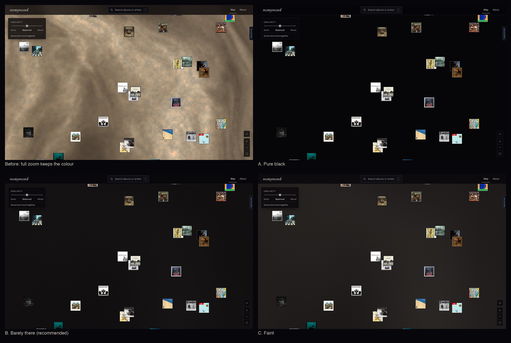
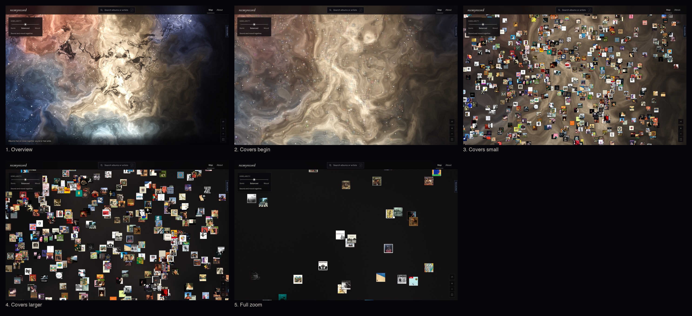
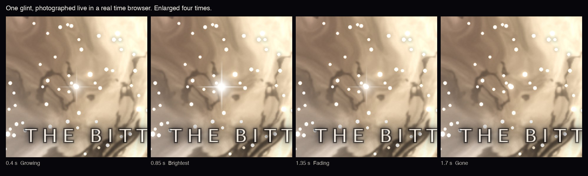
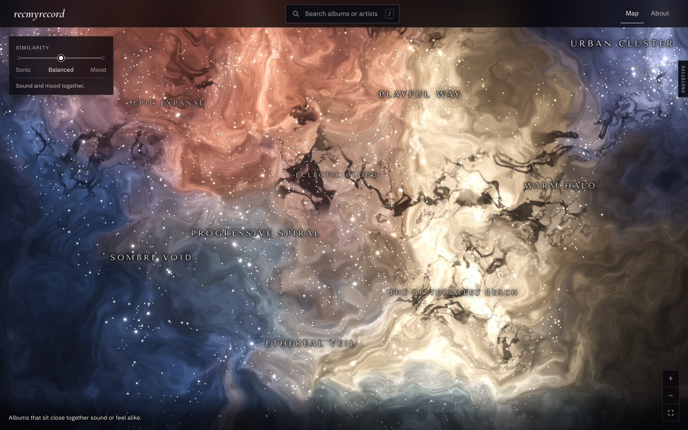
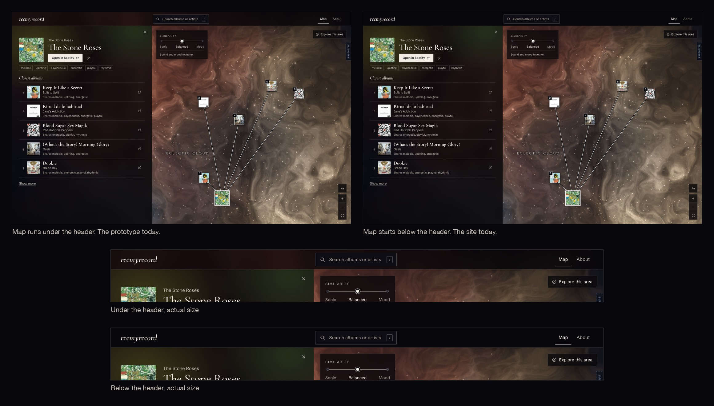
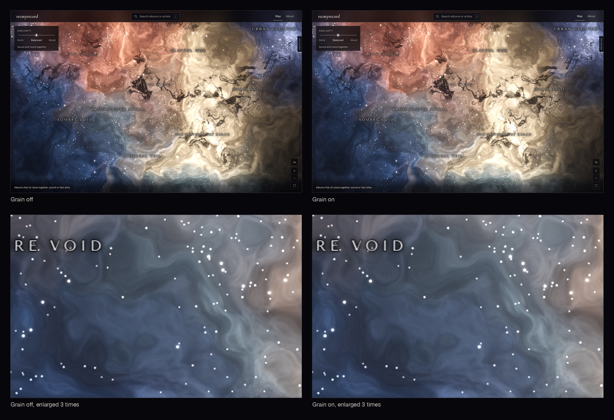
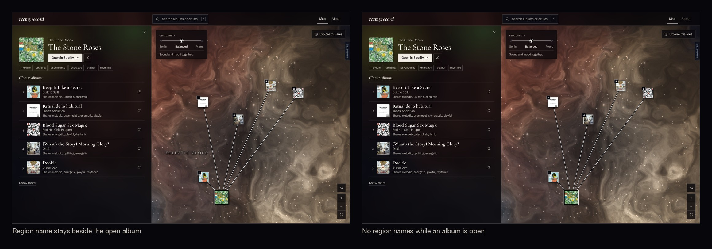
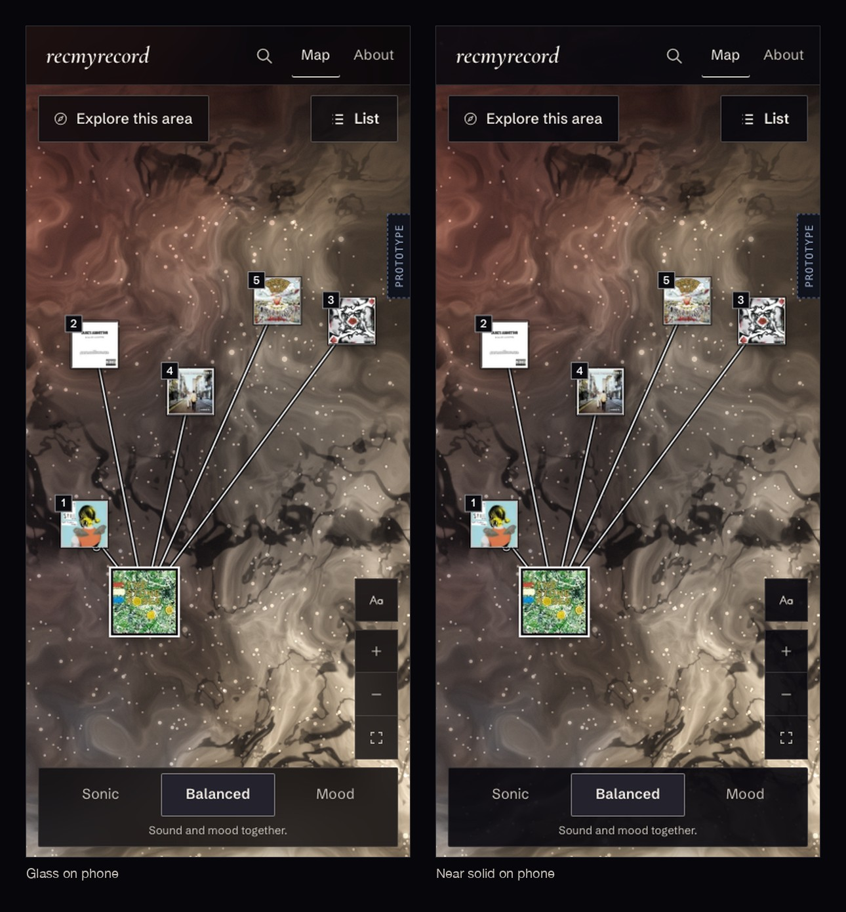
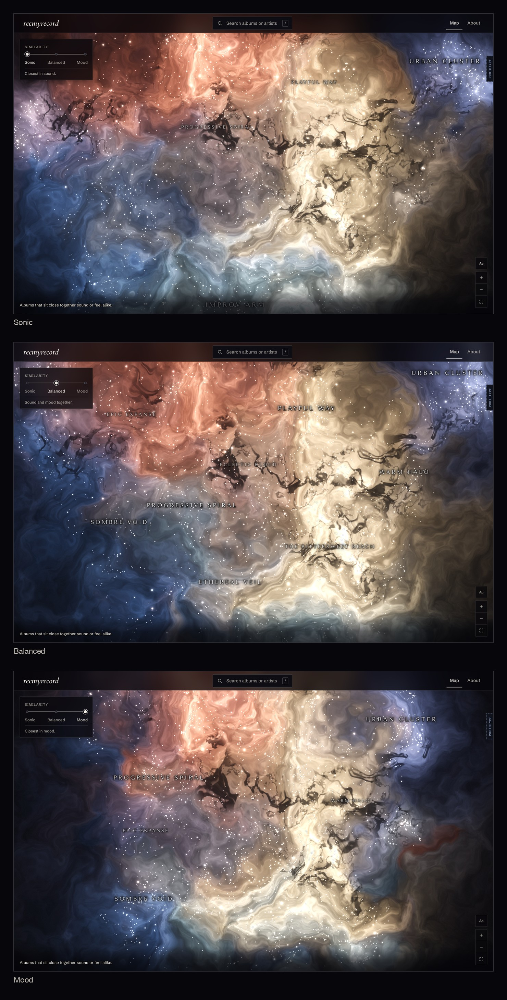

Open questions
Eight things to look at. One is decided. Each has a picture where a picture helps, and links that open the live prototype in a new tab. Open one live tab at a time to keep the laptop cool.
Deep zoom
Decided: C, Faint. It is now the default.
The gas keeps fading as the covers grow. At full zoom the covers sit in near black space, with a faint trace of the colour that was there.
The first picture shows full zoom on the brightest part of the map, before and with three strengths. The second shows five steps of one zoom. It was made with B, so its last step is a little darker than the default is now.


Twinkle
What was wrong: nothing was broken. The glints were tested in a browser running in real time, and every one played from start to end. They were too small, too pale and too rare to notice. One came every 2 to 5 seconds and was about the size of a bright star.
What changed: a glint now comes every 1 to 3 seconds, and up to three can show at once. Each one is larger, whiter and has a solid bright centre. About one in three is on a bright star and shows a thin cross of light.
What to look for: open the first link and keep your hands off the mouse for five seconds. Somewhere on the map a star swells to a bright point, holds for a moment and fades, all within two seconds. The cross of light is the easiest kind to spot. Moving the mouse over the map does not stop them.
The map must be still and zoomed out. Glints stop while you pan, zoom or move the slider, and for half a second after. One zoom in from the opening view brings the covers in, and there are no glints once covers show. They are also off if the Mac has Reduce motion turned on. It is turned off on this Mac.

Random stars
Star size and brightness no longer follow album order. Each visit deals them at random, with the same share of bright and small stars as before. The question is whether the sky still looks as rich.

Header
The map can run behind the see-through top bar, or start below it. Below is what the site does today, so the bar has nothing behind it and reads as solid.

Grain
The site today lays a very faint film grain over everything. The question is whether to keep it over the nebula. It is hard to see at normal size, so the lower row is enlarged.

Name beside an open album
With an album open, the name of its region can stay on the map, or all names can go so only the covers and lines show.

Glass on phone
On a phone the header, the slider row, the zoom buttons and the List button can be glass, or near solid with no blur. Blur costs more on a phone. This has not been tried on a real phone, and the picture comes from a software renderer.

Names on Sonic and Mood
Balanced shows nine names at this size. Sonic shows four and Mood shows five, because fewer regions there have a name. The question is whether that is enough, or whether those two stops need more names.
